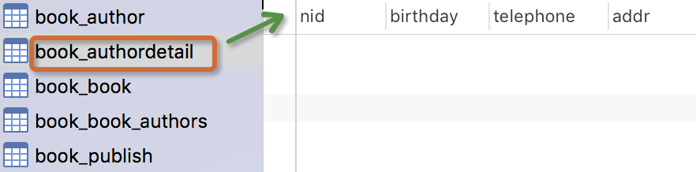
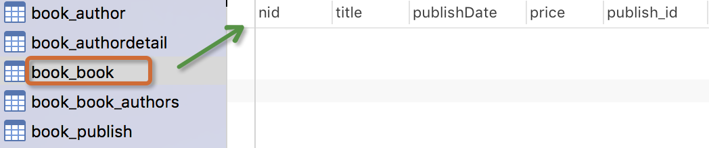
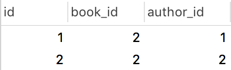

原文连接:https://www.cnblogs.com/changxin7/p/11582429.html
一 创建模型
表和表之间的关系
一对一、多对一、多对多 ，用book表和publish表自己来想想关系，想想里面的操作，加外键约束和不加外键约束的区别，一对一的外键约束是在一对多的约束上加上唯一约束。
实例：我们来假定下面这些概念，字段和关系
作者模型：一个作者有姓名和年龄。
作者详细模型：把作者的详情放到详情表，包含生日，手机号，家庭住址等信息。作者详情模型和作者模型之间是一对一的关系（one-to-one）
出版商模型：出版商有名称，所在城市以及email。
书籍模型： 书籍有书名和出版日期，一本书可能会有多个作者，一个作者也可以写多本书，所以作者和书籍的关系就是多对多的关联关系(many-to-many);一本书只应该由一个出版商出版，所以出版商和书籍是一对多关联关系(one-to-many)。
模型建立如下：
from django.db import models
# Create your models here.
class Author(models.Model): #比较常用的信息放到这个表里面
nid = models.AutoField(primary_key=True)
name=models.CharField( max_length=32)
age=models.IntegerField()
# 与AuthorDetail建立一对一的关系，一对一的这个关系字段写在两个表的任意一个表里面都可以
authorDetail=models.OneToOneField(to="AuthorDetail",to_field="nid",on_delete=models.CASCADE) #就是foreignkey+unique，只不过不需要我们自己来写参数了，并且orm会自动帮你给这个字段名字拼上一个_id，数据库中字段名称为authorDetail_id
class AuthorDetail(models.Model):#不常用的放到这个表里面
nid = models.AutoField(primary_key=True)
birthday=models.DateField()
telephone=models.BigIntegerField()
addr=models.CharField( max_length=64)
class Publish(models.Model):
nid = models.AutoField(primary_key=True)
name=models.CharField( max_length=32)
city=models.CharField( max_length=32)
email=models.EmailField()
#多对多的表关系，我们学mysql的时候是怎么建立的，是不是手动创建一个第三张表，然后写上两个字段，每个字段外键关联到另外两张多对多关系的表，orm的manytomany自动帮我们创建第三张表，两种方式建立关系都可以，以后的学习我们暂时用orm自动创建的第三张表，因为手动创建的第三张表我们进行orm操作的时候，很多关于多对多关系的表之间的orm语句方法无法使用#如果你想删除某张表，你只需要将这个表注销掉，然后执行那两个数据库同步指令就可以了，自动就删除了。
class Book(models.Model):
nid = models.AutoField(primary_key=True)
title = models.CharField( max_length=32)
publishDate=models.DateField()
price=models.DecimalField(max_digits=5,decimal_places=2)
# 与Publish建立一对多的关系,外键字段建立在多的一方，字段publish如果是外键字段，那么它自动是int类型
publish=models.ForeignKey(to="Publish",to_field="nid",on_delete=models.CASCADE) #foreignkey里面可以加很多的参数，都是需要咱们学习的，慢慢来，to指向表，to_field指向你关联的字段，不写这个，默认会自动关联主键字段，on_delete级联删除 字段名称不需要写成publish_id，orm在翻译foreignkey的时候会自动给你这个字段拼上一个_id,这个字段名称在数据库里面就自动变成了publish_id
# 与Author表建立多对多的关系,ManyToManyField可以建在两个模型中的任意一个，自动创建第三张表，并且注意一点，你查看book表的时候，你看不到这个字段，因为这个字段就是创建第三张表的意思，不是创建字段的意思，所以只能说这个book类里面有authors这个字段属性
authors=models.ManyToManyField(to='Author',) #注意不管是一对多还是多对多，写to这个参数的时候，最后后面的值是个字符串，不然你就需要将你要关联的那个表放到这个表的上面
关于多对多表的三种创建方式(目前你先作为了解)
方式一：自行创建第三张表
class Book(models.Model):
title = models.CharField(max_length=32, verbose_name="书名")
class Author(models.Model):
name = models.CharField(max_length=32, verbose_name="作者姓名")
# 自己创建第三张表，分别通过外键关联书和作者
class Author2Book(models.Model):
author = models.ForeignKey(to="Author")
book = models.ForeignKey(to="Book")
class Meta:
unique_together = ("author", "book")方式二：通过ManyToManyField自动创建第三张表
class Book(models.Model):
title = models.CharField(max_length=32, verbose_name="书名")
# 通过ORM自带的ManyToManyField自动创建第三张表
class Author(models.Model):
name = models.CharField(max_length=32, verbose_name="作者姓名")
books = models.ManyToManyField(to="Book", related_name="authors") #自动生成的第三张表我们是没有办法添加其他字段的方式三：设置ManyTomanyField
并指定自行创建的第三张表（称为中介模型）
class Book(models.Model):
title = models.CharField(max_length=32, verbose_name="书名")
# 自己创建第三张表，并通过ManyToManyField指定关联
class Author(models.Model):
name = models.CharField(max_length=32, verbose_name="作者姓名")
books = models.ManyToManyField(to="Book", through="Author2Book", through_fields=("author", "book"))
# through_fields接受一个2元组（'field1'，'field2'）：
# 其中field1是定义ManyToManyField的模型外键的名（author），field2是关联目标模型（book）的外键名。
class Author2Book(models.Model):
author = models.ForeignKey(to="Author")
book = models.ForeignKey(to="Book")
#可以扩展其他的字段了
class Meta:
unique_together = ("author", "book")
注意：
当我们需要在第三张关系表中存储额外的字段时，就要使用第三种方式，第三种方式还是可以使用多对多关联关系操作的接口（all、add、clear等等）
当我们使用第一种方式创建多对多关联关系时，就无法使用orm提供的set、add、remove、clear方法来管理多对多的关系了。
to
设置要关联的表。
to_field
设置要关联的字段。
on_delete
同ForeignKey字段。to
设置要关联的表
to_field
设置要关联的表的字段
related_name
反向操作时，使用的字段名，用于代替原反向查询时的'表名_set'。
related_query_name
反向查询操作时，使用的连接前缀，用于替换表名。
on_delete
当删除关联表中的数据时，当前表与其关联的行的行为。多对多的参数：
to
设置要关联的表
related_name
同ForeignKey字段。
related_query_name
同ForeignKey字段。
through
在使用ManyToManyField字段时，Django将自动生成一张表来管理多对多的关联关系。
但我们也可以手动创建第三张表来管理多对多关系，此时就需要通过
through来指定第三张表的表名。
through_fields
设置关联的字段。
db_table
默认创建第三张表时，数据库中表的名称。 元信息
ORM对应的类里面包含另一个Meta类，而Meta类封装了一些数据库的信息。主要字段如下:
class Author2Book(models.Model):
author = models.ForeignKey(to="Author")
book = models.ForeignKey(to="Book")
class Meta:
unique_together = ("author", "book")
db_table
ORM在数据库中的表名默认是 app_类名，可以通过db_table可以重写表名。db_table = 'book_model'
index_together
联合索引。
unique_together
联合唯一索引。
ordering
指定默认按什么字段排序。
ordering = ['pub_date',]
只有设置了该属性，我们查询到的结果才可以被reverse()，否则是能对排序了的结果进行反转(order_by()方法排序过的数据)获取元信息，可以通过model对象._meta.verbose_name等获取自己通过verbose_name指定的表名，model对象._meta.model_name获取小写的表名，还有model对象.app_label可以获取这个对象的app应用名等等操作。例如：book_obj = models.Book.objects.get(id=1)，book_obj._meta.model_name。
关于db_column和verbose_name
1.指定字段名： 在定义字段的时候，增加参数db_column=’real_field’；
2.指定表名： 在model的class中，添加Meta类，在Meta类中指定表名db_table
例如在某个models.py文件中，有一个类叫Info:
class Info(models.Model):
'''''
信息统计
'''
app_id = models.ForeignKey(App)
app_name = models.CharField(verbose_name='应用名', max_length=32, db_column='app_name2')
class Meta:
db_table = 'info'
verbose_name = '信息统计'
verbose_name_plural = '信息统计' 其中db_column指定了对应的字段名，db_table指定了对应的表明；
如果不这样指定，字段名默认为app_name， 而表明默认为app名+类名： [app_name]_info.
verbose_name指定在admin管理界面中显示中文；verbose_name表示单数形式的显示，verbose_name_plural表示复数形式的显示；中文的单数和复数一般不作区别。
创建完这个表，我们自己可以通过navicat工具来看看数据库里面的那些表，出版社这个表里面没有任何的关系字段，这种单表的数据，我们可以先添加几条数据，在进行下面的增删改查的操作。
生成表如下：


注意事项：
- 表的名称
myapp_modelName，是根据 模型中的元数据自动生成的，也可以覆写为别的名称 id字段是自动添加的- 对于外键字段，Django 会在字段名上添加
"_id"来创建数据库中的列名 - 这个例子中的
CREATE TABLESQL 语句使用PostgreSQL 语法格式，要注意的是Django 会根据settings 中指定的数据库类型来使用相应的SQL 语句。 - 定义好模型之后，你需要告诉Django _使用_这些模型。你要做的就是修改配置文件中的INSTALL_APPSZ中设置，在其中添加
models.py所在应用的名称。 - 外键字段 ForeignKey 有一个 null=True 的设置(它允许外键接受空值 NULL)，你可以赋给它空值 None 。
咱们的表里面包含了一对一、一对多、多对多的关系，我们基于这几个表来练习，将来无论有多少张表，都逃脱不了这三个关系，操作起来都是一样的。
关于on_delete（了解）
on_delete
当删除关联表中的数据时，当前表与其关联的行的行为。
models.CASCADE
删除关联数据，与之关联也删除
models.DO_NOTHING
删除关联数据，引发错误IntegrityError
models.PROTECT
删除关联数据，引发错误ProtectedError
models.SET_NULL
删除关联数据，与之关联的值设置为null（前提FK字段需要设置为可空）
models.SET_DEFAULT
删除关联数据，与之关联的值设置为默认值（前提FK字段需要设置默认值）
models.SET
删除关联数据，
a. 与之关联的值设置为指定值，设置：models.SET(值)
b. 与之关联的值设置为可执行对象的返回值，设置：models.SET(可执行对象)ForeignKey的db_contraint参数
关系和约束大家要搞清楚，我不加外键能不能表示两个表之间的关系啊，当然可以
但是我们就不能使用ORM外键相关的方法了，所以我们单纯的将外键换成一个其他字段类型，只是单纯的存着另外一个关联表的主键值是不能使用ORM外键方法的。
#db_constraint=False只加两者的关系，没有强制约束的效果，并且ORM外键相关的接口(方法)还能使用，所以如果将来公司让你建立外键，并且不能有强制的约束关系，那么就可以将这个参数改为False
customer = models.ForeignKey(verbose_name='关联客户', to='Customer',db_constraint=False)
二 添加表记录
操作前先简单的录入一些数据：还是create和save两个方法，和单表的区别就是看看怎么添加关联字段的数据
publish表：
author表：
多表操作6.png)
authordetail表:
一对多
方式1:
publish_obj=Publish.objects.get(nid=1) #拿到nid为1的出版社对象
book_obj=Book.objects.create(title="金瓶眉",publishDate="2012-12-12",price=100,publish=publish_obj) #出版社对象作为值给publish，其实就是自动将publish字段变成publish_id,然后将publish_obj的id给取出来赋值给publish_id字段，注意你如果不是publish类的对象肯定会报错的，别乱昂
方式2:
book_obj=Book.objects.create(title="金瓶眉",publishDate="2012-12-12",price=100,publish_id=1) #直接可以写id值，注意字段属性的写法和上面不同，这个是publish_id=xxx，上面是publish=xxx。 多表操作8.png)
核心：book_obj.publish与book_obj.publish_id是什么？
多对多
方式一： 多对多一般在前端页面上使用的时候是多选下拉框的样子来给用户选择多个数据，这里可以让用户选择多个书籍，多个作者 # 当前生成的书籍对象
book_obj=Book.objects.create(title="追风筝的人",price=200,publishDate="2012-11-12",publish_id=1)
# 为书籍绑定的做作者对象
yuan=Author.objects.filter(name="yuan").first() # 在Author表中主键为2的纪录，注意取的是author的model对象
egon=Author.objects.filter(name="alex").first() # 在Author表中主键为1的纪录
#有人可能会说，我们可以直接给第三张表添加数据啊，这个自动生成的第三张表你能通过models获取到吗，是获取不到的，用不了的，当然如果你知道了这个表的名字，那么你通过原生sql语句可以进行书的添加，所以要通过orm间接的给第三张表添加数据，如果是你手动添加的第三张表你是可以直接给第三张表添加数据
# 绑定多对多关系,即向关系表book_authors中添加纪录，给书添加两个作者，下面的语法就是告诉orm给第三张表添加两条数据
book_obj.authors.add(yuan,egon) # 将某些特定的 model 对象添加到被关联对象集合中。 ======= book_obj.authors.add(*[]) #book_obj是书籍对象，authors是book表里面那个多对多的关系字段名称。 #其实orm就是先通过book_obj的authors属性找到第三张表，然后将book_obj的id值和两个作者对象的id值组合成两条记录添加到第三张表里面去 方式二
book_obj.authors.add(1，2)
book_obj.authors.add(*[1，2]) #这种方式用的最多，因为一般是给用户来选择，用户选择是多选的，选完给你发送过来的就是一堆的id值
数据库表纪录生成如下：
book表
book_authors表

核心:book_obj.authors.all()是什么？
多对多关系其它常用API：
book_obj.authors.remove() # 将某个特定的对象从被关联对象集合中去除。 ====== book_obj.authors.remove(*[1，2])，将多对多的关系数据删除
book_obj.authors.clear() #清空被关联对象集合
book_obj.authors.set() #先清空再设置 ===== 删除示例：
book_obj = models.Book.objects.filter(nid=4)[0]
# book_obj.authors.remove(2) #将第三张表中的这个book_obj对象对应的那个作者id为2的那条记录删除
# book_obj.authors.clear()
# book_obj.authors.set('2') #先清除掉所有的关系数据，然后只给这个书对象绑定这个id为2的作者，所以只剩下一条记录 3---2，比如用户编辑数据的时候，选择作者发生了变化，那么需要重新选择，所以我们就可以先清空，然后再重新绑定关系数据,注意这里写的是字符串，数字类型不可以
book_obj.authors.set(['1',]) #这么写也可以，但是注意列表中的元素是字符串，列表前面没有*，之前我测试有*，感觉是版本的问题，没事，能够用哪个用哪个more（了解）
一对一和一对多的删改和单表的删改是一样的，别忘了删除表的时候，咱们是做了级联删除的。
更新：
book_obj = models.Book.objects.get(id=1) #获取一个书籍对象
data = {'title':'xxx','price':100} #这个书籍对象更新后的数据
models.Book.objects.filter(id=n).update(**data) #将新数据更新到原来的记录中
book_obj.authors.set(author_list) #将数据和作者的多对多关系加上
删除：
models.Book.objects.filter(id=1).delete()接下来要学的查询就是咱的重头戏了，比较复杂。
三 基于对象的跨表查询
跨表查询是分组查询的基础，F和Q查询是最简单的，所以认真学习跨表查询
一对多查询（Publish 与 Book）
正向查询(按字段：publish)：关联属性字段所在的表查询被关联表的记录就是正向查询，反之就是反向查询
# 查询主键为1的书籍的出版社所在的城市
book_obj=Book.objects.filter(pk=1).first()
# book_obj.publish 是主键为1的书籍对象关联的出版社对象，book对象.外键字段名称
print(book_obj.publish.city) 反向查询(按表名：book_set,因为加上_set是因为反向查询的时候，你查询出来的可能是多条记录的集合)：
publish=Publish.objects.get(name="苹果出版社")
#publish.book_set.all() : 与苹果出版社关联的所有书籍对象集合，写法：小写的表名_set.all()，得到queryset类型数据
book_list=publish.book_set.all()
for book_obj in book_list:
print(book_obj.title)
一对一查询(Author与AuthorDetail)
多表操作12.png)
正向查询(按字段：authorDetail)：
egon=Author.objects.filter(name="egon").first()
print(egon.authorDetail.telephone) egon.authorDeail就拿到了这个对象，因为一对一找到的就是一条记录，注意写法：作者对象.字段名,就拿到了那个关联对象反向查询(按表名：author)：不需要_set，因为一对一正向反向都是找到一条记录
# 查询所有住址在北京的作者的姓名
authorDet=AuthorDetail.objects.filter(addr="beijing")[0]
authorDet.author.name多对多查询(Author与Book)
多表操作13.png)
正向查询(按字段：authors)：
反向查询(按表名：book_set)：
注意：
你可以通过在 ForeignKey() 和ManyToManyField的定义中设置 related_name 的值来覆写 FOO_set 的名称。例如，如果 Article model 中做一下更改：
那么接下来就会如我们看到这般：
在这里我们补充一点，因为你很快就要接触到了，那就是form表单里面的button按钮和form表单外面的button按钮的区别，form表单里面的button按钮其实和input type='submit'的标签是有同样的效果的，都能够提交form表单的数据，但是如果放在form表单外面的button按钮，那就只是个普通的按钮了。，还有一点，input type='submit'按钮放到form表单外面那就成了一个普通的按钮。
四 基于双下划线的跨表查询（基于join实现的）
Django 还提供了一种直观而高效的方式在查询(lookups)中表示关联关系，它能自动确认 SQL JOIN 联系。要做跨关系查询，就使用两个下划线来链接模型(model)间关联字段的名称，直到最终链接到你想要的model 为止。
'''
基于双下划线的查询就一句话：正向查询按字段,反向查询按表名小写用来告诉ORM引擎join哪张表,一对一、一对多、多对多都是一个写法，注意，我们写orm查询的时候，哪个表在前哪个表在后都没问题，因为走的是join连表操作。
'''一对多查询
# 练习: 查询苹果出版社出版过的所有书籍的名字与价格(一对多)
# 正向查询 按字段:publish
queryResult=Book.objects
.filter(publish__name="苹果出版社") #通过__告诉orm将book表和publish表进行join，然后找到所有记录中publish.name='苹果出版社'的记录（注意publish是属性名称），然后select book.title,book.price的字段值
.values_list("title","price") #values或者values_list
# 反向查询 按表名:book
queryResult=Publish.objects
.filter(name="苹果出版社")
.values_list("book__title","book__price")多对多查询
# 练习: 查询yuan出过的所有书籍的名字(多对多)
# 正向查询 按字段:authors:
queryResult=Book.objects
.filter(authors__name="yuan")
.values_list("title")
# 反向查询 按表名:book
queryResult=Author.objects
.filter(name="yuan")
.values_list("book__title","book__price")一对一查询
# 查询yuan的手机号
# 正向查询
ret=Author.objects.filter(name="yuan").values("authordetail__telephone")
# 反向查询
ret=AuthorDetail.objects.filter(author__name="yuan").values("telephone")进阶练习(连续跨表)
# 练习: 查询人民出版社出版过的所有书籍的名字以及作者的姓名
# 正向查询
queryResult=Book.objects
.filter(publish__name="人民出版社")
.values_list("title","authors__name")
# 反向查询
queryResult=Publish.objects
.filter(name="人民出版社")
.values_list("book__title","book__authors__age","book__authors__name")
# 练习: 手机号以151开头的作者出版过的所有书籍名称以及出版社名称
# 方式1:
queryResult=Book.objects
.filter(authors__authorDetail__telephone__regex="151")
.values_list("title","publish__name")
# 方式2:
ret=Author.objects
.filter(authordetail__telephone__startswith="151")
.values("book__title","book__publish__name")related_name
反向查询时，如果定义了related_name ，则用related_name替换 表名，例如：
# 练习: 查询人民出版社出版过的所有书籍的名字与价格(一对多)# 反向查询 不再按表名:book,而是related_name:bookList
queryResult=Publish.objects
.filter(name="人民出版社")
.values_list("bookList__title","bookList__price") 五 聚合查询、分组查询、F查询和Q查询
聚合
aggregate(*args, **kwargs)
# 计算所有图书的平均价格
>>> from django.db.models import Avg
>>> Book.objects.all().aggregate(Avg('price')) #或者给它起名字：aggretate(a=Avg('price'))
{'price__avg': 34.35}
aggregate()是QuerySet 的一个终止子句，意思是说，它返回一个包含一些键值对的字典。键的名称是聚合值的标识符，值是计算出来的聚合值。键的名称是按照字段和聚合函数的名称自动生成出来的。如果你想要为聚合值指定一个名称，可以向聚合子句提供它。
>>> Book.objects.aggregate(average_price=Avg('price'))
{'average_price': 34.35}
如果你希望生成不止一个聚合，你可以向aggregate()子句中添加另一个参数。所以，如果你也想知道所有图书价格的最大值和最小值，可以这样查询：
>>> from django.db.models import Avg, Max, Min
>>> Book.objects.aggregate(Avg('price'), Max('price'), Min('price')) #count('id'),count(1)也可以统计个数,Book.objects.all().aggregete和Book.objects.aggregate()，都可以
{'price__avg': 34.35, 'price__max': Decimal('81.20'), 'price__min': Decimal('12.99')}分组
###################################－－单表分组查询－－#######################################################
查询每一个部门名称以及对应的员工数
emp:
id name age salary dep
1 alex 12 2000 销售部
2 egon 22 3000 人事部
3 wen 22 5000 人事部
sql语句:
select dep,Count(*) from emp group by dep;
ORM:
emp.objects.values("dep").annotate(c=Count("id") #注意：annotate里面必须写个聚合函数，不然没有意义，并且必须有个别名=，别名随便写，但是必须有，用哪个字段分组，values里面就写哪个字段,annotate其实就是对分组结果的统计，统计你需要什么。''' select dep,count('id') as c from emp grouby dep; #原生sql语句中的as c，不是必须有的'''
###################################－－多表分组查询－－###########################
多表分组查询：
查询每一个部门名称以及对应的员工数
emp:
id name age salary dep_id
1 alex 12 2000 1
2 egon 22 3000 2
3 wen 22 5000 2
dep
id name
1 销售部
2 人事部
emp－dep:
id name age salary dep_id id name
1 alex 12 2000 1 1 销售部
2 egon 22 3000 2 2 人事部
3 wen 22 5000 2 2 人事部
sql语句:
select dep.name,Count(*) from emp left join dep on emp.dep_id=dep.id group by dep.id
ORM:
dep.objetcs.values("id").annotate(c=Count("emp")).values("name","c")
ret = models.Emp.objects.values('dep_id','name').annotate(a=Count(1)) ''' SELECT `app01_emp`.`dep_id`, `app01_emp`.`name`, COUNT(1) AS `a` FROM `app01_emp` GROUP BY `app01_emp`.`dep_id`, `app01_emp`.`name`'''#<QuerySet [{'dep_id': 1, 'name': 'alex', 'a': 1}, {'dep_id': 2, 'name': 'egon', 'a': 1}, {'dep_id': 2, 'name': 'wen', 'a': 1}]>,注意，这里如果你写了其他字段，那么只有这两个字段重复，才算一组，合并到一起来统计个数
class Emp(models.Model):
name=models.CharField(max_length=32)
age=models.IntegerField()
salary=models.DecimalField(max_digits=8,decimal_places=2)
dep=models.CharField(max_length=32)
province=models.CharField(max_length=32) annotate()为调用的QuerySet中每一个对象都生成一个独立的统计值（统计方法用聚合函数）。
总结 ：跨表分组查询本质就是将关联表join成一张表，再按单表的思路进行分组查询,，既然是join连表，就可以使用咱们的双下划线进行连表了。
#单表：
#查询每一个部门的id以及对应员工的平均薪水
ret = models.Emp.objects.values('dep_id').annotate(s=Avg('salary'))
#查询每个部门的id以及对对应的员工的最大年龄
ret = models.Emp.objects.values('dep_id').annotate(a=Max('age'))
#Emp表示表，values中的字段表示按照哪个字段group by，annotate里面是显示分组统计的是什么
#连表：
# 查询每个部门的名称以及对应的员工个数和员工最大年龄
ret = models.Emp.objects.values('dep__name').annotate(a=Count('id'),b=Max('age')) #注意，正向与反向的结果可能不同，如果反向查的时候，有的部门还没有员工，那么他的数据也会被统计出来，只不过值为0，但是正向查的话只能统计出来有员工的部门的相关数据，因为通过你是员工找部门，而不是通过部门找员工，结果集里面的数据个数不同，但是你想要的统计结果是一样的
#<QuerySet [{'a': 1, 'dep__name': '销售部', 'b': 12}, {'a': 3, 'dep__name': '人事部', 'b': 22}]>
#使用双下划线进行连表，然后按照部门名称进行分组，然后统计员工个数和最大年龄，最后结果里面显示的是部门名称、个数、最大年龄。
#注意：如果values里面有多个字段的情况：ret = models.Emp.objects.values('dep__name','age').annotate(a=Count('id'),b=Max('age')) #是按照values里面的两个字段进行分组，两个字段同时相同才算是一组，看下面的sql语句''' SELECT `app01_dep`.`name`, `app01_emp`.`age`, COUNT(`app01_emp`.`id`) AS `a`, MAX(`app01_emp`.`age`) AS `b` FROM `app01_emp` INNER JOIN `app01_dep` ON (`app01_emp`.`dep_id` = `app01_dep`.`id`) GROUP BY `app01_dep`.`name`, `app01_emp`.`age`;'''
下面是书籍表和出版社表的一个连表分组的sql语句写法：
多表操作14.png)
查询练习
(1) 练习：统计每一个出版社的最便宜的书
publishList=Publish.objects.annotate(MinPrice=Min("book__price")) #如果没有使用objects后面values或者values_list，得到的结果是queryset类型，里面是Publish的model对象，并且是对所有记
录进行的统计，统计的Minprice也成了这些model对象里面的一个属性，这种连表分组统计的写法最常用，思路也比较清晰
for publish_obj in publishList:
print(publish_obj.name,publish_obj.MinPrice)
annotate的返回值是querySet，如果不想遍历对象，可以用上valuelist：
queryResult= Publish.objects
.annotate(MinPrice=Min("book__price"))
.values_list("name","MinPrice")
print(queryResult)'''
SELECT "app01_publish"."name", MIN("app01_book"."price") AS "MinPrice" FROM "app01_publish"
LEFT JOIN "app01_book" ON ("app01_publish"."nid" = "app01_book"."publish_id")
GROUP BY "app01_publish"."nid", "app01_publish"."name", "app01_publish"."city", "app01_publish"."email"
'''(2) 练习：统计每一本书的作者个数
ret=Book.objects.annotate(authorsNum=Count('authors__name'))
ret=models.Book.objects.annotate(authorsNum=Count('authors__name')).values('title','authorsNum') #注意写法，values里面写的个数的别名ret=models.Book.objects.annotate(a=Count('author__name')).filter(a__gt=2).values('title','a') #还有这种写法，看看你能不能明白这是在做什么(3) 统计每一本以py开头的书籍的作者个数：
queryResult=Book.objects
.filter(title__startswith="Py")
.annotate(num_authors=Count('authors')) #连接第三张表再连接author表，where title regexp '^Py' 然后按照连表后的大表中的book表的title字段进行分组，并且统计对应作者的个数(4) 统计不止一个作者的图书：
queryResult=Book.objects
.annotate(num_authors=Count('authors'))
.filter(num_authors__gt=1) #filter也是也可以是querset来调用 (5) 根据一本图书作者数量的多少对查询集 QuerySet进行排序:
Book.objects.annotate(num_authors=Count('authors')).order_by('num_authors')
(6) 查询各个作者出的书的总价格:
# 按author表的所有字段 group by
queryResult=Author.objects .annotate(SumPrice=Sum("book__price")) .values_list("name","SumPrice")
print(queryResult)F查询与Q查询
F查询
在上面所有的例子中，我们构造的过滤器都只是将字段值与某个常量做比较。如果我们要对两个字段的值做比较，那该怎么做呢？我们在book表里面加上两个字段：评论数：commentNum，收藏数：KeepNum
Django 提供 F() 来做这样的比较。F() 的实例可以在查询中引用字段，来比较同一个 model 实例中两个不同字段的值。
# 查询评论数大于收藏数的书籍
from django.db.models import F
Book.objects.filter(commentNum__lt=F('keepNum'))
Django 支持 F() 对象之间以及 F() 对象和常数之间的加减乘除和取模的操作。
# 查询评论数大于收藏数2倍的书籍
Book.objects.filter(commentNum__lt=F('keepNum')*2)
修改操作也可以使用F函数,比如将每一本书的价格提高30元：
Book.objects.all().update(price=F("price")+30)
Q查询
filter() 等方法中的关键字参数查询都是一起进行“AND” 的。 如果你需要执行更复杂的查询（例如OR 语句），你可以使用Q 对象。
from django.db.models import Q
Q(title__startswith='Py')
Q 对象可以使用&(与) 、|（或）、~（非） 操作符组合起来。当一个操作符在两个Q 对象上使用时，它产生一个新的Q 对象。
bookList=Book.objects.filter(Q(authors__name="yuan")|Q(authors__name="egon"))
等同于下面的SQL WHERE 子句：
WHERE name ="yuan" OR name ="egon"
你可以组合& 和| 操作符以及使用括号进行分组来编写任意复杂的Q 对象。同时，Q 对象可以使用~ 操作符取反，这允许组合正常的查询和取反(NOT) 查询：
bookList=Book.objects.filter(Q(authors__name="yuan") & ~Q(publishDate__year=2017)).values_list("title")
bookList=Book.objects.filter(Q(Q(authors__name="yuan") & ~Q(publishDate__year=2017))&Q(id__gt=6)).values_list("title") #可以进行Q嵌套，多层Q嵌套等，其实工作中比较常用
查询函数可以混合使用Q 对象和关键字参数。所有提供给查询函数的参数（关键字参数或Q 对象）都将"AND”在一起。但是，如果出现Q 对象，它必须位于所有关键字参数的前面。例如：
bookList``=``Book.objects.``filter``(Q(publishDate__year``=``2016``) | Q(publishDate__year``=``2017``),
``title__icontains``=``"python" #也是and的关系，但是Q必须写在前面
``)综合查询练习题
#1 查询每个作者的姓名以及出版的书的最高价格
ret = models.Author.objects.values('name').annotate(max_price=Max('book__price'))
print(ret) #注意：values写在annotate前面是作为分组依据用的，并且返回给你的值就是这个values里面的字段（name）和分组统计的结果字段数据(max_price)
# ret = models.Author.objects.annotate(max_price=Max('book__price')).values('name','max_price')#这种写法是按照Author表的id字段进行分组，返回给你的是这个表的所有model对象，这个对象里面包含着max_price这个属性，后面写values方法是获取的这些对象的属性的值，当然，可以加双下划线来连表获取其他关联表的数据，但是获取的其他关联表数据是你的这些model对象对应的数据，而关联获取的数据可能不是你想要的最大值对应的那些数据
# 2 查询作者id大于2作者的姓名以及出版的书的最高价格
ret = models.Author.objects.filter(id__gt=2).annotate(max_price=Max('book__price')).values('name','max_price')#记着，这个values取得是前面调用这个方法的表的所有字段值以及max_pirce的值，这也是为什么我们取关联数据的时候要加双划线的原因
print(ret)
#3 查询作者id大于2或者作者年龄大于等于20岁的女作者的姓名以及出版的书的最高价格
# ret = models.Author.objects.filter(Q(id__gt=2)|Q(age__gte=20),sex='female').annotate(max_price=Max('book__price')).values('name','max_price')
#4 查询每个作者出版的书的最高价格 的平均值
# ret = models.Author.objects.values('id').annotate(max_price=Max('book__price')).aggregate(Avg('max_price')) #{'max_price__avg': 555.0} 注意，aggregate是queryset的终止句，得到的是字典
# ret = models.Author.objects.annotate(max_price=Max('book__price')).aggregate(Avg('max_price')) #{'max_price__avg': 555.0} 注意，aggregate是queryset的终止句，得到的是字典
#5 每个作者出版的所有书的最高价格以及最高价格的那本书的名称（通过orm玩起来就是个死题，需要用原生sql）
'''
select title,price from (select app01_author.id,app01_book.title,app01_book.price from app01_author INNER JOIN app01_book_authors on app01_author.id=
app01_book_authors.author_id INNER JOIN app01_book on app01_book.id=
app01_book_authors.book_id ORDER BY app01_book.price desc) as b GROUP BY id
'''
print(ret)六 ORM执行原生sql语句(了解)
在模型查询API不够用的情况下，我们还可以使用原始的SQL语句进行查询。
Django 提供两种方法使用原始SQL进行查询：一种是使用raw()方法，进行原始SQL查询并返回模型实例；另一种是完全避开模型层，直接执行自定义的SQL语句。
执行原生查询
raw()管理器方法用于原始的SQL查询，并返回模型的实例：
注意：raw()语法查询必须包含主键。
这个方法执行原始的SQL查询，并返回一个django.db.models.query.RawQuerySet 实例。 这个RawQuerySet 实例可以像一般的QuerySet那样，通过迭代来提供对象实例。
举个例子：
class Person(models.Model):
first_name = models.CharField(...)
last_name = models.CharField(...)
birth_date = models.DateField(...)可以像下面这样执行原生SQL语句
>>> for p in Person.objects.raw('SELECT * FROM myapp_person'):
... print(p)raw()查询可以查询其他表的数据。
举个例子：
ret = models.Student.objects.raw('select id, tname as hehe from app02_teacher')
for i in ret:
print(i.id, i.hehe)raw()方法自动将查询字段映射到模型字段。还可以通过translations参数指定一个把查询的字段名和ORM对象实例的字段名互相对应的字典
d = {'tname': 'haha'}
ret = models.Student.objects.raw('select * from app02_teacher', translations=d)
for i in ret:
print(i.id, i.sname, i.haha)原生SQL还可以使用参数，注意不要自己使用字符串格式化拼接SQL语句，防止SQL注入！
d = {'tname': 'haha'}
ret = models.Student.objects.raw('select * from app02_teacher where id > %s', translations=d, params=[1,])
for i in ret:
print(i.id, i.sname, i.haha)直接执行自定义SQL
有时候raw()方法并不十分好用，很多情况下我们不需要将查询结果映射成模型，或者我们需要执行DELETE、 INSERT以及UPDATE操作。在这些情况下，我们可以直接访问数据库，完全避开模型层。
我们可以直接从django提供的接口中获取数据库连接，然后像使用pymysql模块一样操作数据库。
from django.db import connection, connections
cursor = connection.cursor() # cursor = connections['default'].cursor()
cursor.execute("""SELECT * from auth_user where id = %s""", [1])
ret = cursor.fetchone() 七 Python脚本中调用Django环境
(django外部脚本使用models)
如果你想通过自己创建的python文件在django项目中使用django的models，那么就需要调用django的环境：
import os
if __name__ == '__main__':
os.environ.setdefault("DJANGO_SETTINGS_MODULE", "BMS.settings")
import django
django.setup()
from app01 import models #引入也要写在上面三句之后
books = models.Book.objects.all()
print(books)八 补充多个app配置models
app01的models文件内容
from django.db import models
# Create your models here.
class UserInfo(models.Model):
name = models.CharField(max_length=12)app02的models文件内容
from django.db import models
# Create your models here.
class Class(models.Model):
title = models.CharField(max_length=32)
user = models.ForeignKey('app01.Userinfo') #如果需要两个app之间的models进行关联，直接这样写就可以，或者直接将那个被关联的表，通过import的方法引入进行进行关联。不需要进行其他的配置了，直接执行数据库同步指令就可以了。
关于多个app多个数据库，并且数据有关联时的一些玩法，等后面我再补充吧